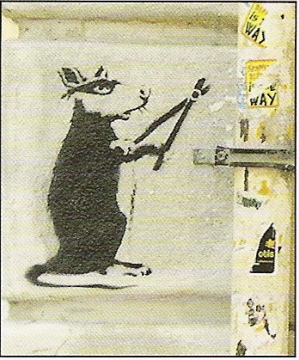
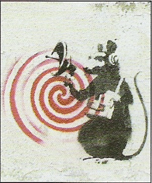
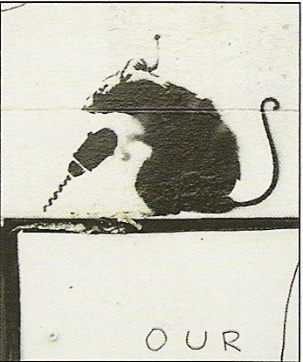
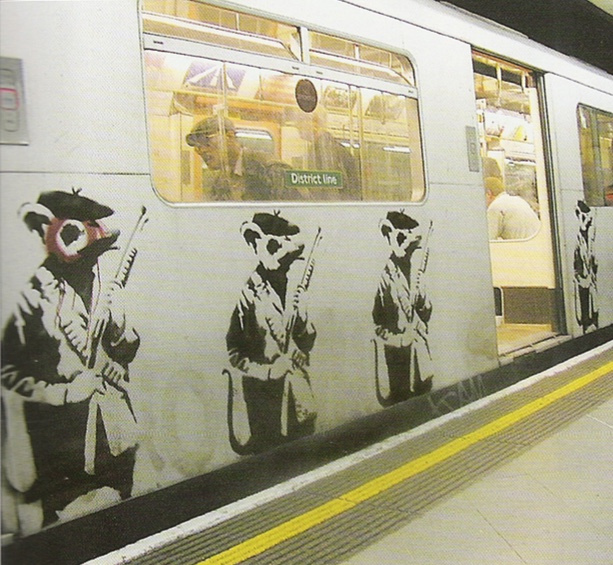
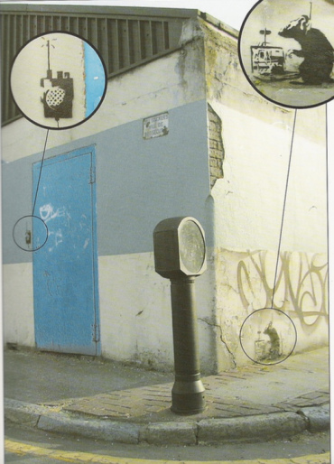
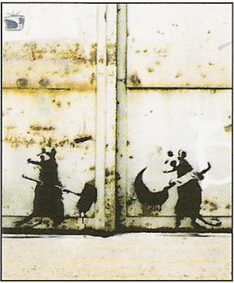

Banksy’s second book sees the light in May 2002 and is heavier on rats than his first. “Like most people I have a fantasy that all the little powerless losers will gang up together. That all the vermin will get some good equipment and then the underground will go overground and tear the city apart”.
2002-05
Prints





